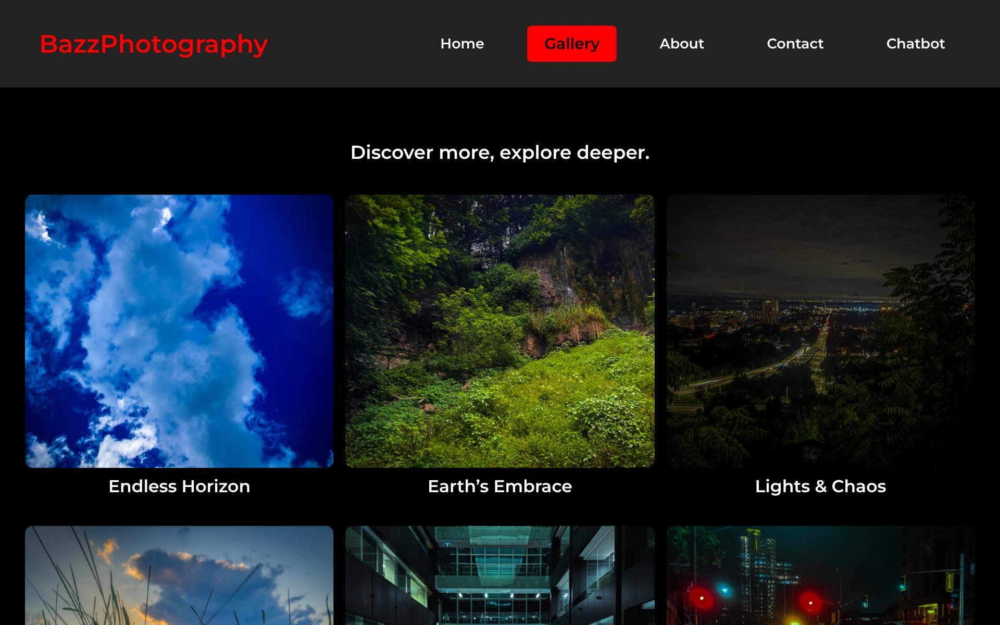
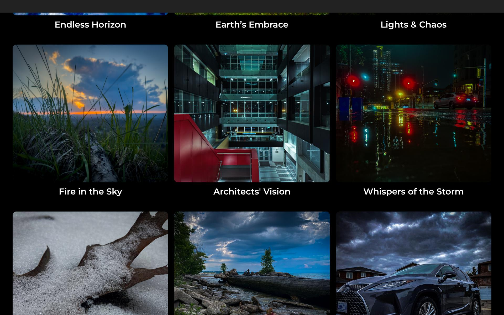

One shape instead of three
The apps had grown by copy and paste. I'm rebuilding them as a modular monolith, with schemas shared from the React forms through FastAPI down to MySQL.
visitor@intehad:~$ whoami
Full-stack developer. I build the form, the endpoint behind it, the schema under that, and the pipeline that ships all three.
Management Engineering at the University of Waterloo. Currently keeping three production apps running at Redstone Food Group.
~/work
At Redstone Food Group I look after QA Tracker, Sample Requests, and R&D, the tools the quality team opens every day. Together they take in 100+ QA reports a day and track more than $150K of sample shipping a year.
The apps had grown by copy and paste. I'm rebuilding them as a modular monolith, with schemas shared from the React forms through FastAPI down to MySQL.
Releases used to mean logging in, pulling, and restarting by hand. Now a CI/CD pipeline ships to Linux EC2, where each app runs as a systemd service behind nginx.
QA managers describe what they need in their own words. I turn that into a React form and a FastAPI endpoint, shipped through a branch, a pull request, and review.
How a QA report travels
All of it runs on Linux EC2. New versions arrive through the CI/CD pipeline, which replaced manual pulls and restarts.
Followed the EC2 server logs back to the root cause, then wrote the incident report.
Customer fields were showing "None". The cause was MySQL sort ties: rows with equal sort values come back in no guaranteed order.
~/project
BazzPhotography is my photo site with a search you talk to. Type what you're looking for in plain language and it pulls up the matching shots.
CLIP and BLIP models I fine-tuned in PyTorch tag and caption 1,000+ images. A pipeline pulls new uploads from the Google Drive API into SQLite, so a photo is searchable seconds after it's uploaded, with 90% less manual prep.


~/log
Three production apps for the quality team, a rebuild into a modular monolith, and deploys that run themselves.
Built a web platform from scratch, plus the data plumbing behind its OpenAI-powered chatbot.
Replaced manual report prep with pipelines, then put the results in front of senior leadership every month.
Cleaned sports broadcast data for ML training and built a way to score LLMs against each other.
Software engineering, databases and software design, algorithms and data structures, machine learning, probability and statistics.
~/stack
in production at Redstone right now